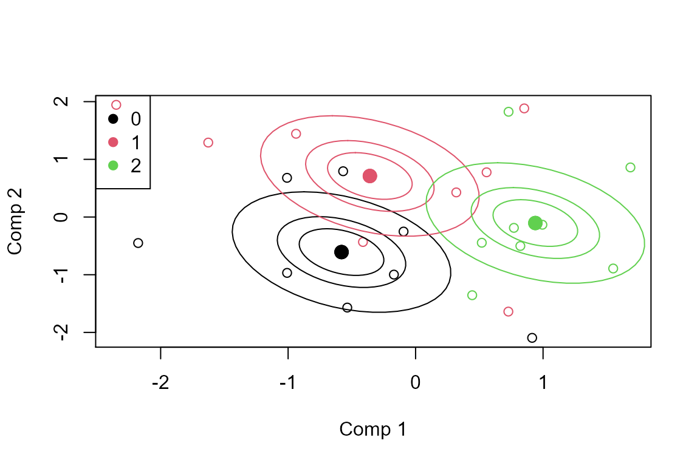
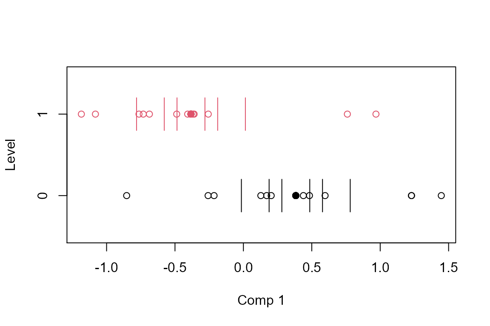

library(multiblock)
#> Registered S3 methods overwritten by 'lme4':
#> method from
#> cooks.distance.influence.merMod car
#> influence.merMod car
#> dfbeta.influence.merMod car
#> dfbetas.influence.merMod car
#> Registered S3 methods overwritten by 'multiblock':
#> method from
#> print.multiblock ade4
#> summary.multiblock ade4
#>
#> Attaching package: 'multiblock'
#> The following object is masked from 'package:stats':
#>
#> loadingsThe following example uses a simulated dataset for showcasing some of the possibilities of the ASCA method.
Two categorical factors and a covariate are simulated together with a standard normal set of 10 responses.
set.seed(1)
dataset <- data.frame(y = I(matrix(rnorm(24*10), ncol = 10)),
x = factor(c(rep(2,8), rep(1,8), rep(0,8))),
z = factor(rep(c(1,0), 12)), w = rnorm(24))
colnames(dataset$y) <- paste('Var', 1:10, sep = " ")
rownames(dataset) <- paste('Obj', 1:24, sep = " ")
str(dataset)
#> 'data.frame': 24 obs. of 4 variables:
#> $ y: 'AsIs' num [1:24, 1:10] -0.626 0.184 -0.836 1.595 0.33 ...
#> ..- attr(*, "dimnames")=List of 2
#> .. ..$ : NULL
#> .. ..$ : chr [1:10] "Var 1" "Var 2" "Var 3" "Var 4" ...
#> $ x: Factor w/ 3 levels "0","1","2": 3 3 3 3 3 3 3 3 2 2 ...
#> $ z: Factor w/ 2 levels "0","1": 2 1 2 1 2 1 2 1 2 1 ...
#> $ w: num 0.707 1.034 0.223 -0.879 1.163 ...This ASCA implementation uses R’s formula interface for model specification. This means that the first argument is a formula with response on the left and design on the right, separated by a tilde operator, e.g. y ~ x + z or assessment ~ assessor + candy. The names in the formula refer to variables in a data.frame (or list). Separation with plus (+) adds main effects to the model, while separation by stars (*) adds main effects and interactions, e.g. y ~ x * z. Colons (:) can be used for explicit interactions, e.g. y ~ x + z + x:z. More complicated formulas exist, but only a simple subset is supported by asca.
Scores for first factor are extracted and a scoreplot with confidence ellipsoids is produced.
sc <- scores(mod)
head(sc)
#> Comp 1 Comp 2
#> Obj 1 0.9395791 -0.1039977
#> Obj 2 0.9395791 -0.1039977
#> Obj 3 0.9395791 -0.1039977
#> Obj 4 0.9395791 -0.1039977
#> Obj 5 0.9395791 -0.1039977
#> Obj 6 0.9395791 -0.1039977
scoreplot(mod, legendpos = "topleft", ellipsoids = "confidence")
This is repeated for the second factor.
sc <- scores(mod, factor = "z")
head(sc)
#> Comp 1
#> Obj 1 -0.3831621
#> Obj 2 0.3831621
#> Obj 3 -0.3831621
#> Obj 4 0.3831621
#> Obj 5 -0.3831621
#> Obj 6 0.3831621
scoreplot(mod, factor = "z", ellipsoids = "confidence")
A basic loadingplot for the first factor is generated using graphics from the pls package.
lo <- loadings(mod)
head(lo)
#> Comp 1 Comp 2
#> Var 1 -0.03688007 -0.15615007
#> Var 2 -0.01764472 -0.05590506
#> Var 3 0.14250312 0.06184430
#> Var 4 -0.50220715 -0.35817451
#> Var 5 -0.54263018 0.45252899
#> Var 6 0.44399942 -0.01293480
loadingplot(mod, scatter = TRUE, labels = 'names')